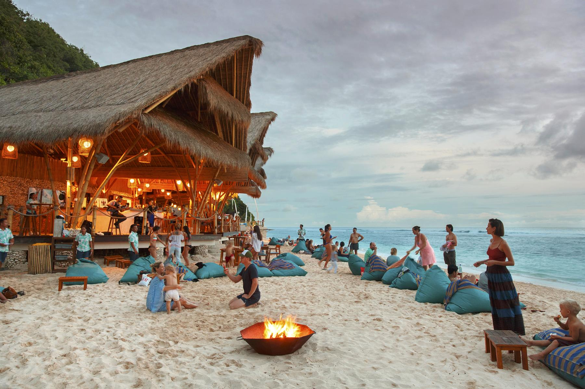
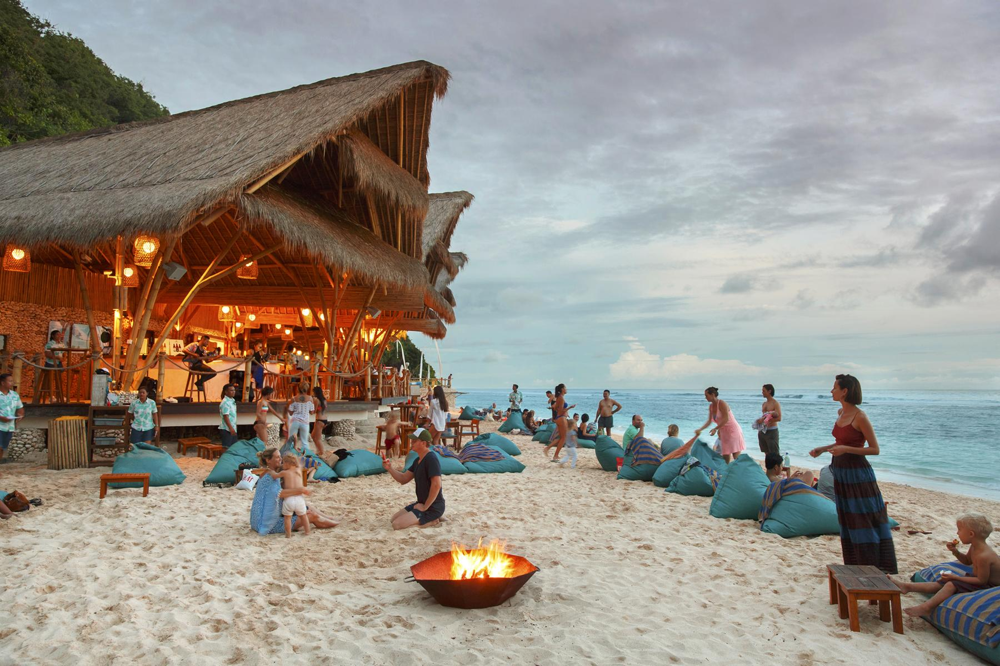

Home Wild life attractions Beaches Activities Heritage locations Hotel details Shop
...Beaches In SriLanka...
.Sri Lanka is a tropical island located in the deep blue waters of the Indian Ocean and the Bay of Bengal. The country has approximately 1,000 kilometers of beautiful golden beaches bordered by coconut trees, making it an ideal beach vacation destination. A plethora of premium resorts and villas, as well as budget hotels, line the coast, offering visitors some of Sri Lanka's best beach vacations. The beaches, of course, are the main draw for visitors and locals, but some sites, such as Galle on the south coast, have historical significance, which is an added bonus to a sun and sand vacation.
...1.Unawatuna Beach...
. District: Galle
 

.Unawatuna is a lovely wide curving beach about 5 kilometers from Galle. The beach has been named one of the top twelve beaches in the world. The beach is safe for swimming because it is protected by a reef. Rumasssala, a rocky outcrop protruding into the sea near Unawatuna, is linked to Ramayana mythology.
...2.Hikkaduwa Beach...
. District: Galle


. Hikkaduwa, on Sri Lanka's southern coast, is famous for its underwater wonders. Visitors can explore the magical underwater life to their hearts' content by renting a glass-bottomed boat or goggles and flippers. Corals should not be purchased or sold in order to protect the natural environment.
...3.Mirissa Beach...
. District: Matara


.Mirissa, 4 kilometers southeast of Weligama on the Matara road, is known as one of Sri Lanka's most beautiful beaches in the country's southern coastal area. A headland separates its small fishing harbour from its beautiful curve of sandy beaches with calm and clear waters. Unawatuna or Hikkaduwa are better options for a quieter beach vacation than Mirissa.
...Nearby Hotels...
Hotel| Image | Location | Contact Number | |
|---|---|---|---|
. Epic Unawatuna . Unawatuna | . 077 925 5914 | | |
. Riff Hikkaduwa| . Hikkaduwa | . 0912 274 440 | | |
. Triple O Six . Mirissa | . 0417 110 006 | |